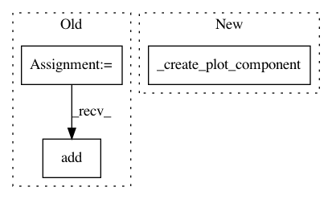

0eb2eb092ba5e5d501d853abc3e307e79b7c5140,examples/bar_plot.py,PlotFrame,_create_window,#PlotFrame#,70
Before Change
return (range(1, 10), data)
def _create_window(self):
container = OverlayPlotContainer(bgcolor = "white")
self.container = container
plots = make_curves(self)
for plot in plots:
plot.padding = 50
container.add(plot)
left_axis = PlotAxis(plot, orientation="left")
bottom_axis = LabelAxis(plot, orientation="bottom",
After Change
def _create_window(self):
// Return a window containing our plots
return Window(self, -1, component=_create_plot_component())
if __name__ == "__main__":
demo_main(PlotFrame, size=size, title=title)
In pattern: SUPERPATTERN
Frequency: 3
Non-data size: 3
Instances
Project Name: enthought/chaco
Commit Name: 0eb2eb092ba5e5d501d853abc3e307e79b7c5140
Time: 2009-01-30
Author: vibha@651a555e-23ca-0310-84fe-ca9f7c59d2ea
File Name: examples/bar_plot.py
Class Name: PlotFrame
Method Name: _create_window
Project Name: enthought/chaco
Commit Name: d17c95dd266ae47b9bc552165319405ef7f90f51
Time: 2009-01-29
Author: vibha@651a555e-23ca-0310-84fe-ca9f7c59d2ea
File Name: examples/basic/line_plot_hold.py
Class Name: PlotFrame
Method Name: _create_window
Project Name: enthought/chaco
Commit Name: 0eb2eb092ba5e5d501d853abc3e307e79b7c5140
Time: 2009-01-30
Author: vibha@651a555e-23ca-0310-84fe-ca9f7c59d2ea
File Name: examples/tornado.py
Class Name: PlotFrame
Method Name: _create_window